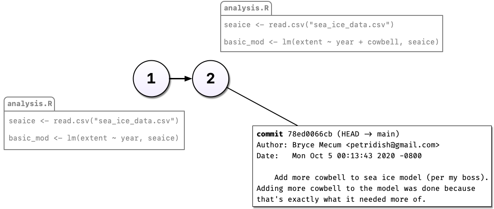
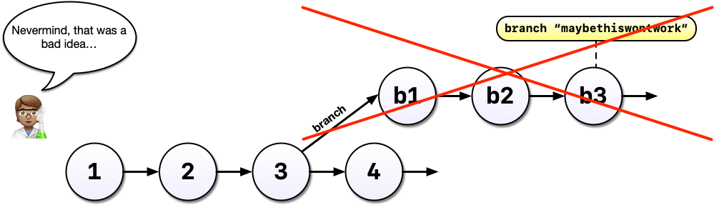
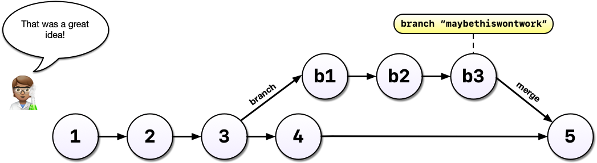

Git & GitHub
A motivating example
Version 1
You’re working on an analysis in R and you’ve got it into a state you’re pretty happy with.
We’ll call this version 1.
The next day, you have an email from your boss, “Hey, you know what this model needs?”
Your boss demands more cowbell. So you add it to the model.
But you’re worried about losing the old model. So you comment out the old code and put a serious warning in a comment above it.
Commenting out code is common, or saving a new file with the changes, e.g., analysis_v2.R.
But it’s hard to understand why you did this when you come back years later, or you when you send your script to a colleague.
Version control to the rescue!

Instead of commenting out the old code, we can change our code without fear, and tell Git to take a snapshot of our change (make a “commit”).
Version control to the rescue!
So now we have two distinct versions of our analysis and we can always see (and recover, if necessary) what the previous version(s) look like.
Version control to the rescue!
The reasons for the change are described in the commit message. We can also see when and by whom the change was made.
After some time, you’ve committed a 3rd version of your analysis, and a colleague has an idea…
Your current analysis is working well, and you worry this might break it…
Without a tool like Git, you might copy analysis.R to another file called analysis-ml.R which is mostly redundant with your existing code except for a few lines.
This may not be problematic until you want to make a change to a bit of shared code - and now you have to make changes in two files, if you even remember to.
Instead, with Git, we can start a new branch, leaving the original version in place.

Branches allow us to confidently experiment on our code, all while leaving the original code intact and recoverable.
 You’ve been working in a branch, made a few commits, and your boss emails asking you to update the original model.
You’ve been working in a branch, made a few commits, and your boss emails asking you to update the original model.

With Git and branches, we can continue developing our main analysis at the same time as we are working on any experimental branches.
Outcome 1: Experimental model: no good!

After all that hard work on the machine learning experiment, you decide to scrap it.
It’s perfectly fine to leave branches in place and switch back to the main line of development, but we can also delete them to tidy up.
Outcome 2: Experimental model: success!

Your machine learning experiment was a wild success! You can merge the changes made on your experimental branch back into your main line.
Merging branches is analogous to accepting a change in MS Word’s “track changes” feature or Google Docs “suggesting” mode.
Key Benefits of Version Control with Git
- Safely modify code and files without fear of losing previous versions: make a change, take a snapshot, and recover the old version if necessary
- Access the complete change history of code and files: see what changed, who made the change, when, and why
- Safely experiment with new ideas: test new ideas or features without disrupting the working analysis
and later…
- Collaborate with colleagues (Git with GitHub): work with multiple team members on the same project safely, simultaneously, and remotely